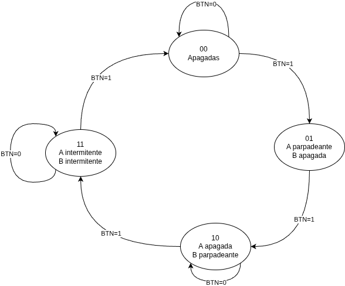
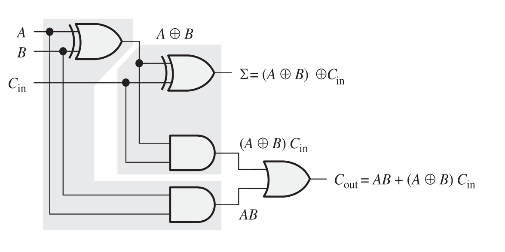
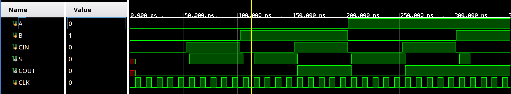
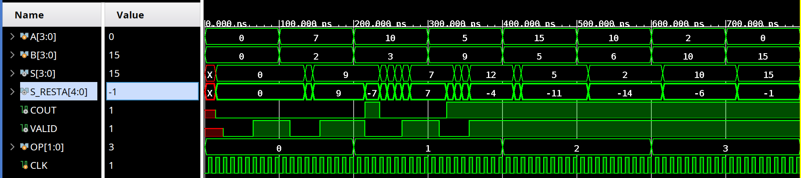
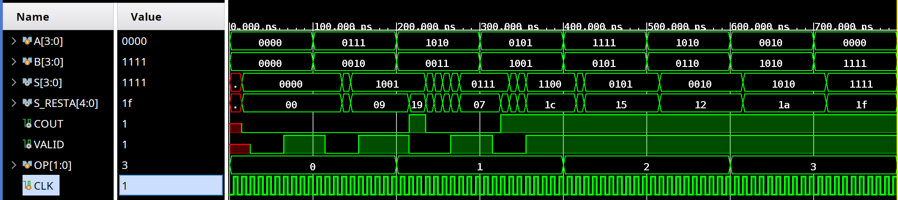
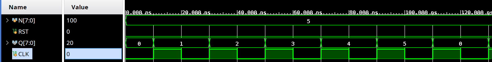
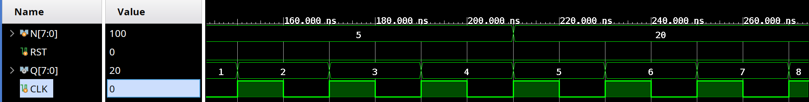
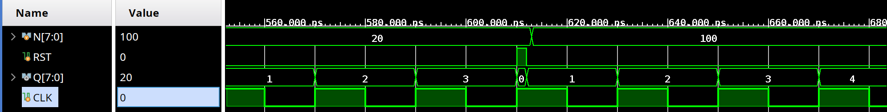
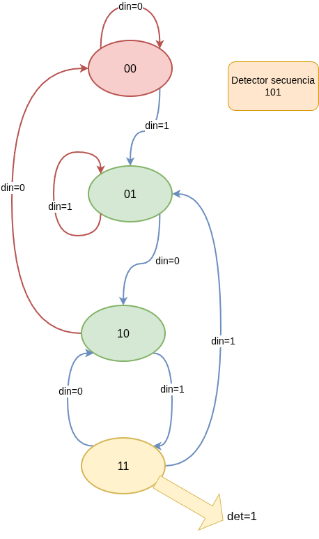

Sistema de Alarma de 3 Estados
Este proyecto implementa un sistema de control de seguridad residencial basado en una arquitectura de hardware síncrona. El núcleo del diseño es una máquina de estados finitos que administra tres modos de operación: Desarmado, Armado y Alarma Activa.
Código Fuente:
https://github.com/SimonAulet/portfolio/tree/main/FPGA/Alarm
Arquitectura del sistema: flujo de señales entre la detección de secuencia y el control de estados.
Lógica de Control y Funcionamiento
La interfaz de usuario consta de tres pulsadores de combinación (b1, b2, b3) y un comando de validación (check). El sistema evalúa la secuencia ingresada únicamente cuando se presiona la validación, lo que permite una lógica de control robusta: si el usuario intenta validar una secuencia incorrecta mientras el sistema está armado, la transición es inmediata hacia el estado de Alarma. Del mismo modo, el estado de alerta se dispara ante la activación del sensor de movimiento (MOV).
Estrategia de Sincronización
Para garantizar la estabilidad operativa dentro de la FPGA y evitar la creación de múltiples dominios de reloj, se optó por una estrategia de habilitadores síncronos. En lugar de dividir la línea de reloj principal —con sus correspondientes problemas de timing— se implementó el módulo freq_divider.
Este componente genera pulsos de un solo ciclo ("ticks") que habilitan procesos a frecuencias menores (como 1 kHz y 1 Hz), manteniendo todo el diseño perfectamente sincronizado al reloj maestro de 100 MHz. Además, el módulo es totalmente parametrizable, lo que permite ajustar las escalas de división para acelerar los tiempos en etapas de simulación o definir los valores finales para la síntesis.
Ver Código: Generador de Ticks (freq_divider.v)
always @(posedge clk_in)
// Pulse generator at 1kHz and 1 Hz
module freq_divider #(
parameter mf_divider = 100_000,
parameter lf_divider = 1_000)
(
input wire clk_in,
output reg tick_mf,
output reg tick_lf
);
reg [18:0] mf_counter;
reg [8:0] lf_counter;
initial
begin
tick_mf = 0;
tick_lf = 0;
mf_counter = 0;
lf_counter = 0;
end
// Counter advancing
always @(posedge clk_in)
begin
if (mf_counter == mf_divider - 1) //mf counter. division is for switching posedge and negedge
begin
mf_counter <= 0;
if(lf_counter == lf_divider - 1) //lf counter
lf_counter <= 0;
else
lf_counter <= lf_counter + 1;
end else begin
mf_counter <= mf_counter + 1;
end
end
// Freq divider lf
always @(posedge clk_in)
begin
if((lf_counter == 0) && (mf_counter==0))
tick_lf <= 1'b1;
else
tick_lf <= 1'b0;
end
// Freq divider mf
always@(posedge clk_in)
begin
if(mf_counter == 0)
tick_mf <= 1'b1;
else
tick_mf <= 1'b0;
end
endmodule
end
Optimización de Recursos
El acondicionamiento de las señales de entrada se beneficia directamente de la estrategia de sincronización anterior. El módulo anti_bounce utiliza los ticks de 1 kHz como referencia temporal para filtrar el ruido mecánico de los pulsadores. Esta decisión de diseño permite reducir significativamente el uso de registros: la ventana de estabilidad de 20 ms se gestiona con un contador compacto de 6 bits, evitando la necesidad de contadores de 21 bits que serían requeridos si se operara directamente sobre la frecuencia base de 100 MHz.
Verificación
La confiabilidad del sistema se aseguró mediante una metodología de validación incremental. Los módulos fueron sometidos a testbenches dedicados para verificar correcto funcionamiento antes de su integración final en la entidad superior.
Secuenciador de Luces (Máquina de Moore)
Este diseño implementa un secuenciador de efectos lumínicos controlado por un único pulsador. La arquitectura se basa estrictamente en el modelo de Máquina de Moore, donde las salidas dependen exclusivamente del estado actual y no de las entradas directas.
Código Fuente:
https://github.com/SimonAulet/portfolio/tree/main/FPGA/Moore_seq
Arquitectura Desacoplada
Para maximizar la modularidad, se dividió el sistema en dos bloques funcionales independientes que operan bajo el mismo dominio de reloj (100 MHz), sincronizados mediante las señales de habilitación (ticks) heredadas del diseño anterior:
- Control de Estados (
state_change.v): Gestiona la lectura del pulsador, el debouncing (usandotick_mf) y las transiciones de estados. - Decodificación de Salida (
led_change.v): Interpreta el estado actual y genera los patrones visuales correspondientes.
Lógica de Transición y Salida
El sistema cicla a través de 4 estados operativos con cada pulsación validada. La lógica de salida aprovecha la señal de baja frecuencia (
Esta separación permite alterar los patrones lumínicos (ej: cambiar la frecuencia o el patrón de bit) modificando únicamente el módulo de salida, sin riesgo de alterar la lógica de control de flujo. |

Diagrama de estados del secuenciador (Moore) |
Ver Código: Lógica de Salida (led_change.v)
module led_change(
input wire[1:0] state,
input wire clk,
input wire tick_lf,
output reg led_a,
output reg led_b
);
initial
begin
led_a = 1'b0;
led_b = 1'b0;
end
always@(posedge clk)
case(state)
2'b00:
begin
led_a <= 0;
led_b <= 0;
end
2'b01:
begin
if(tick_lf)
led_a <= ~led_a;
else
led_a <= led_a;
led_b <= 0;
end
2'b10:
begin
led_a <= 0;
if(tick_lf)
led_b <= ~led_b;
else
led_b <= led_b;
end
2'b11:
begin
if(tick_lf)
led_a <= ~led_a;
else
led_a <= led_a;
led_b <= led_a; //copy led_a to avoid mirror blink
end
default:
begin
led_a <= 0;
led_b <= 0;
end
endcase
endmodule
Fundamentos de Verilog
Esta sección explora la construcción de hardware digital desde sus bloques más elementales, enfocándose en la modularidad, parametrización y máquinas de estados.
Código Fuente:
https://github.com/SimonAulet/portfolio/tree/main/FPGA/Verilog
Diseño Jerárquico: Sumador Completo (Ej. 10 y 11)Este módulo ilustra la metodología de diseño "bottom-up". En lugar de describir la lógica de suma completa de una vez, se construyó encapsulando componentes de menor nivel:
Esta estructura permite escalar fácilmente hacia un Sumador de 4-bits (Ripple Carry) reutilizando el módulo validado, base fundamental para la ALU. |

Arquitectura con 2 Half-Adders  Validación de tabla de verdad |
Unidad Aritmético Lógica (ALU) de 4-Bits (Ej. 12)Integración de lógica combinacional aritmética y lógica en un solo núcleo. La ALU realiza 4 operaciones seleccionables mediante un Opcode de 2 bits:
En las simulaciones se valida tanto el manejo de signo (formato decimal) como la operación bit a bit (formato binario). |

Aritmética: Suma y Resta (Signo)  Lógica: AND y OR (Bitwise) |
Contador Parametrizable "Módulo-N" (Ej. 18)Un diseño de lógica secuencial flexible que permite definir el límite de cuenta (N) dinámicamente mediante una entrada de 8 bits. Se validaron 3 escenarios críticos:
|

1. Inicio de cuenta (0 a 5)  2. Cambio de N "on-the-fly"  3. Reset Asíncrono |
Detector de Secuencia "101" (Ej. 20)Implementación de una Máquina de Estados de Moore que analiza una entrada serial bit a bit.
Diseñado para permitir solapamiento (overlap). Por ejemplo, en la secuencia |
 |